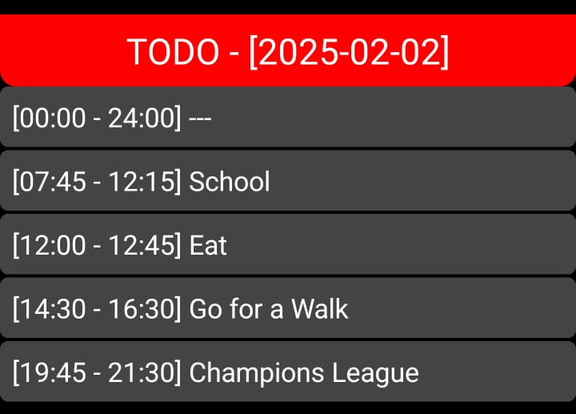

To-Do App - Kotlin Project
This to-do app was developed in just 3 hours, from setup to fixing errors and deploying the final version. I've been using it daily for 30 days, making it an essential part of my routine.
The app is built in Kotlin for Android and serves as a dynamic task manager to efficiently plan and organize daily schedules. The key idea was to create a time-based task planner that automatically fills empty time slots with placeholders while keeping everything neatly sorted.
Users can add, delete, and manage tasks for specific dates, with an option to mark tasks as recurring (daily). Tasks are always sorted by time, and any gaps between scheduled activities are auto-filled to maintain a structured daily overview.
The app uses Room as a local database, ensuring that all tasks persist even after restarting the app. It also includes a refresh function that dynamically updates the task list, automatically sorting tasks and filling gaps—without requiring a manual reset.
Visually, the app follows a modern dark theme, featuring a red header to display the selected date and a black background for contrast. The bottom navigation buttons (used for adding tasks, selecting a date, refreshing, and clearing non-recurring tasks) are styled in red with white text, slightly elevated to avoid overlapping with the system navigation bar.
For a cleaner experience, the app runs in fullscreen mode, hiding the system UI. Users can long-press on tasks to delete them individually or use the dedicated delete button to clear all tasks for a selected day while keeping recurring ones intact.
This project was a great exercise in combining database management, dynamic UI updates, and automated scheduling logic to create a seamless daily planning experience.